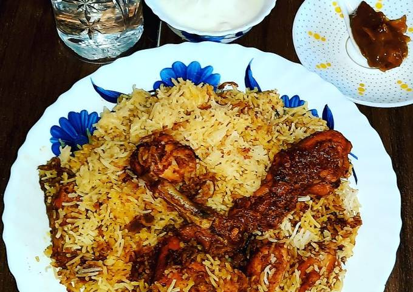

Biriyani

Description
Biriyani is a mixed rice dish originating among
the Muslims of the Indian subcontinent. It is made
with Indian spices, rice, and usually some type of
meat, and sometimes, in addition, eggs and potatoes.
Biryani is one of the most popular dishes in South Asia,
as well as among the diaspora from the region.
Ingredients
- 2 tbsp sunflower oil
- 1 large onion
- 4 chicken breast
- Juice of 1 lemon
- 2 tsp garam masala
- 1 tsp chilli powder
- 1 tsp salt
- 300g basmati rice
- 1 garlic clove crushed
- fresh ginger pieces
- 850 ml hot chicken stock
- 3 tbsp chopped fresh corriander
Steps
- Heat the oil in a large saucepan over a
low heat. Add the onion, cover and cook
for 10 minutes until softened.
- Cut the chicken into bite-size pieces,
tip into a bowl, and add the lemon juice,
garam masala, chilli powder and salt.
Stir well to coat.
- Rinse the rice several times in cold water,
until the water runs clear. Add the garlic
and ginger to the onion and cook for 2
minutes, then add the chicken pieces and
cook for a further 2 minutes, stirring
constantly.
- Add the rice and hot stock to the pan,
stir well then bring to the boil. Cover
with a tight-fitting lid, reduce the
heat slightly and cook for 5 minutes.
Turn off the heat and leave the pan
for 10 minutes to allow the rice to
finish cooking in the steam. Do not
remove the lid. Stir through the
coriander and serve immediately.